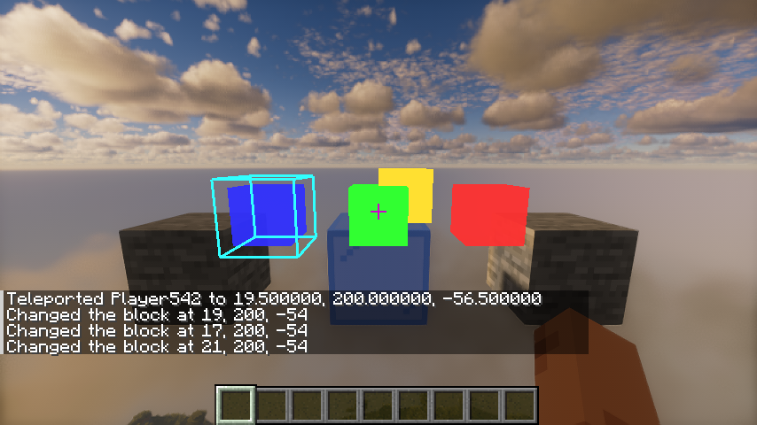
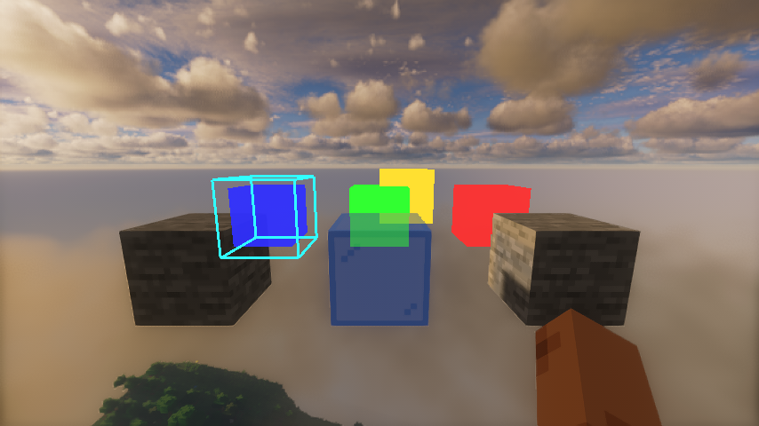

EXIT · Minecraft 26.3 · Iris · Kappa v5.3
EXIT 绕过光影的一帧
开着光影时，模组自己画的东西（这里是四个彩色方块）如果交给光影去画，会被光影的光照、雾、TAA 改得面目全非。 EXIT 的做法是：让光影照常画完整个世界，模组的东西则用原版着色器画进 EXIT 自己的“通道”，最后再按深度叠回光影的成品画面上。 要叠得对，EXIT 得知道世界、手、玻璃在哪里，这些信息来自它在光影画到一半时复制下来的深度。
场景不一定画满整个缓冲，有两种情况：Kappa 这类光影自己把场景缩到左下角 75% 去画（TAAU），EXIT 先量出这个缩放，再把复制的深度放大回全分辨率； Super Resolution 模组让光影在更小的区域里画、最后再放大，EXIT 直接从 SR 读到场景尺寸，通道和场景一样大，最后拉伸合并。 下面的流程图可以在普通光影（BSL，画满整个缓冲）和这两种情况之间切换，都是冒烟测试里真实的一帧，每个节点里的图都是那一刻缓冲里的内容。


流程图：一帧从头到尾
点图片可以放大。窄屏上流程图可以左右滑动。图片由冒烟测试里的 FrameDump 从同一帧导出，窗口 854×480：普通光影用 ./gradlew :fabric:runSmokeClient 和 BSL v8.4；Kappa 用 ./gradlew :fabric:runSmokeClient 和 Kappa v5.3；Super Resolution 用 ./gradlew :fabric:runSmokeClient -Pexit.superResolution、Sundial Lite 1.2 和 FSR2（放大倍数 1.21）。
缩放是怎么量出来的
EXIT 不知道光影怎么变换顶点，所以让光影自己画一个 EXIT 知道位置的四边形：按原版投影算好，正好覆盖屏幕中间 90%（裁剪坐标 ±0.9）。
它用原版 ENTITY_SOLID 管线的副本去画，Iris 会换成光影自己的程序，所以顶点照样被缩放。
这个副本不写任何颜色，画完立刻把深度复原，光影看不到它。比较画前画后的深度，变了的地方就是四边形实际落在哪里（流程图里的探针掩码）。
| 轴 | 应在（像素） | 测到（像素） | 缩放 a | 偏移 b |
|---|---|---|---|---|
| x | 42.7 – 811.3 | 32 – 609 | 577 ÷ 768.6 = 0.7507 | ≈ −0.06 |
| y | 24 – 456 | 18 – 342 | 324 ÷ 432 = 0.75 | 0 |
之后每次复制深度，对全分辨率的每个像素 p，都去光影深度里读第 floor(a·p + b) 个像素。
BSL、Sundial 测得的 a 约等于 1、偏移不到 1 像素（只是 TAA 抖动），这时不重采样，和以前一样直接复制。
Super Resolution 怎么处理
Super Resolution 也是“场景只画在缓冲的一角”，但它的缩小比例是已知的：EXIT 通过 SR 的接口读到渲染尺寸（这里 854×480 ÷ 1.21 = 705×396）。 所以 EXIT 的深度副本和通道都按这个尺寸建，复制时取左下角这一块，像素一一对应，不需要测量，也不需要重采样。
区别在最后一步：光影的成品已经被 SR 放大到整个窗口，而 EXIT 的混合层还是 705×396。
合并时（STRETCHED）窗口里每个像素 p 去读混合层的 p × 705/854，把混合层拉伸后盖上去。
SR 在用时 EXIT 不画探针，因为探针也会落在这块小区域里，测出来的 0.825 会让场景被缩小两次。
限制
- 只能处理“缩放 + 平移”这一类顶点变换；弯曲世界之类的任意变换处理不了。
- 只在光影管线或窗口尺寸变化后测一次；同一个管线里动态改分辨率不会被发现。
- 装了 Super Resolution 时不测量；SR 和 TAAU 光影同时用没有处理。
- Aerixium SFA PTGI 没有本地验证；NeoForge 只编译过；Vulkan 要等 Iris 支持后才能实际验证。